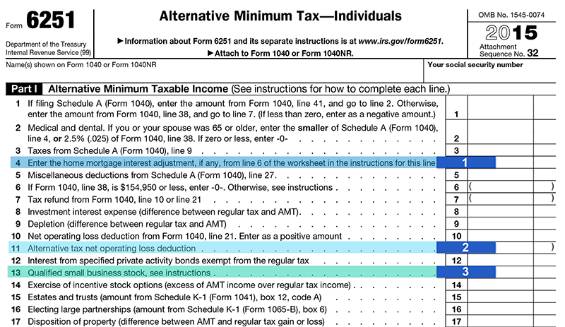

The "regular" income tax is calculated based on a set of rules, and the AMT is calculated on another set of rules. Those two sets of rules do not match. While the rules associated with the Alternative Minimum Tax are complex and far outside of the scope of this lesson, there are several items captured on Form 6251 that are worth noting. Click each numbered area to learn more.
